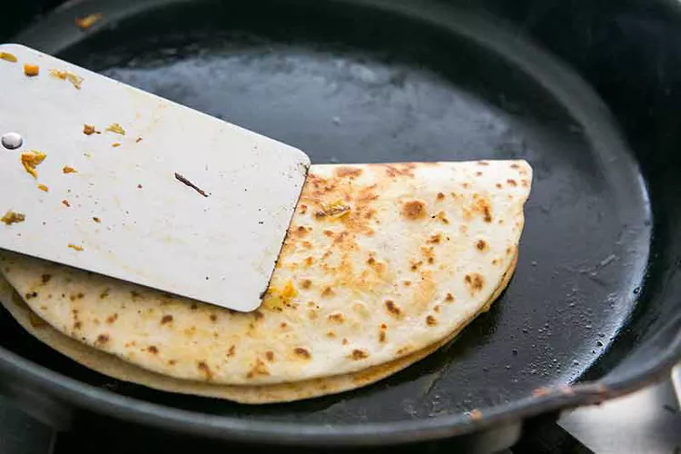

Kimchi Avocado Quesadilla |
|||||
|---|---|---|---|---|---|
| Prep Time | Cook Time | Total Time | |||
| 5 mins | 10 mins | 15 mins |
| Serving Size |
|---|
| 2 |
|
|---|
Melt 1 1/2 Tbsp of butter in a cast iron (or other relatively stick-free) pan on medium high heat.
Add the kimchi and spread out in an even layer over the pan. Cook for 5 to 6 minutes, flipping half way. Remove from pan.
Add half of the remaining butter to the pan and swirl it around on the bottom.
Add one of the flour tortillas and flip it to coat both sides with a little butter.
Add half of the grated cheese and half of the sautéd kimchi.
 Fold the tortilla over (like an omelette) with a metal spatula. Press down with the spatula. After about 30 seconds or so, flip to the other side. The flour tortilla should be nicely browned.
When the cheese has clearly melted remove from pan and repeat with the other tortilla and the remaining cheese and kimchi.
Open up the quesadilla and lay slices of avocado over the kimchi. Sprinkle with a little lime juice and chopped fresh parsley or cilantro.
Fold the quesadilla over again.
Cut into your preffered size to enjoy!!!